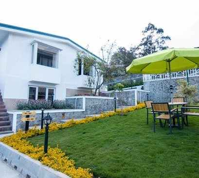

About Kodaikanal
Tt was established in 1845, as a refuge from the summer heat of southern India. At an altitude of around 7200 feet above sea level, the magic of Kodaikanal lies in its pristine nature, vintage charm and breathtaking natural scenery that mesmerizes anyone who visits the place, nature lover or not. This charming town is the perfect destination for a romantic getaway, any time of the year.
How To Reach
-
 BY AIR:The nearest airport is Madurai, around 120 Kms away. It takes 3 hours to reach Kodaikanal if you take a bus, which are quite frequent. If you don’t have a flight to Madurai, then you can fly to Coimbatore which is around 150 Kms away. Coimbatore is well connected to all major Indian cities.
BY AIR:The nearest airport is Madurai, around 120 Kms away. It takes 3 hours to reach Kodaikanal if you take a bus, which are quite frequent. If you don’t have a flight to Madurai, then you can fly to Coimbatore which is around 150 Kms away. Coimbatore is well connected to all major Indian cities. -
 BY BUS:Frequent buses are available from nearby cities such as Chennai, Pondicherry and Coimbatore and Madurai. Kodaikanal is well connected via motorable roads on which many private and state run buses ply.
BY BUS:Frequent buses are available from nearby cities such as Chennai, Pondicherry and Coimbatore and Madurai. Kodaikanal is well connected via motorable roads on which many private and state run buses ply. -
 BY TRAIN:The closest station to Kodaikanal is the one on Kodai Road. It is around 100 Kms away from Kodaikanal. Taxis are easily available from the railway station.
BY TRAIN:The closest station to Kodaikanal is the one on Kodai Road. It is around 100 Kms away from Kodaikanal. Taxis are easily available from the railway station. -
 BY ROAD - OWN VEHICLE:You can always make it a road trip and enjoy the drive to Kodai. A long drive, but it would be a great way to start a weekend getaway if you both enjoy driving. The drive from Chennai is 439 Kms and from Bangalore its 310 Kms. Kodaikanal is one of the most popular road trip destinations from Madurai considering it’s only a 3-3.5 hours drive.
BY ROAD - OWN VEHICLE:You can always make it a road trip and enjoy the drive to Kodai. A long drive, but it would be a great way to start a weekend getaway if you both enjoy driving. The drive from Chennai is 439 Kms and from Bangalore its 310 Kms. Kodaikanal is one of the most popular road trip destinations from Madurai considering it’s only a 3-3.5 hours drive.
Best Time To Go
-
 BEST TIME TO GO:Kodaikanal has a year-round pleasant weather being a hill station. However, the peak season is from November to January. The minimum temperatures go down to 8-10 degrees hence making the environment perfect for a nice romantic trip! If you’re in mood for a quiet trip then January should be avoided since it’s very commonly visited at the time of Pongal celebrations.
BEST TIME TO GO:Kodaikanal has a year-round pleasant weather being a hill station. However, the peak season is from November to January. The minimum temperatures go down to 8-10 degrees hence making the environment perfect for a nice romantic trip! If you’re in mood for a quiet trip then January should be avoided since it’s very commonly visited at the time of Pongal celebrations.
March to May are summer months. Temperatures range from 34-20 degrees. It’s a pleasant weather to enjoy the outdoors. Monsoons in Kodai are beautiful too (June to Sep). The rich flora comes alive during this time and pure fragrant air makes the whole ambiance lovely! -
 WEATHER:11-20 degree C
WEATHER:11-20 degree C
Humidity 88%
Take the Coaker’s Walk!
Remember those long winding walks that you two used to take some time back, but lost its attraction in the hustle bustle of everyday? Well, it’s time to bring back some old memories with the Coaker’s Walk! A kilometer long pathway along the edge of a steep slope, it offers breathtaking views of Dolphin’s Nose, Pambar River, and even the city of Madurai. It opens 7 am onwards, so try and get there early to catch the sunrise together! It’s one of the most beautiful experiences to enjoy a romantic walk amidst lovely orange shades in the sky. Might sound cliché, but totally worth it! :)

Chocolate in the Market
A trip is never complete without some local shopping and Kodaikanal doesn’t disappoint. If you are lovers of chocolate (Duh! Who isn’t?), then you are going to have a chance to enjoy some amazing homemade chocolate, something that is unique to Kodai. Buy a slab, find a bench and enjoy it together! Chocolate & romance always go together :)
You can also buy some glass made goods & also some wooden goods in Kodai.

Want to impress with some flowers? Bryant Park is your place.
If you love flowers, well this is your paradise. Here, there is a special section of roses, where you can find approximately 740 of its varieties. Boasting of over 325 species of trees, cactuses and shrubs, this park appears like a gorgeous rainbow when all its flowers bloom. This botanical park is located near a lake and is famous for its annual Horticulture Show.
Who doesn’t like Waterfalls?
Kodaikanal has earned quite a reputation for its ethereal waterfalls like the Bear Shola Falls, Silver Cascade, Glen Falls, and Fairy Falls. The many waterfalls in Kodaikanal make a great romantic outing and discovering all of them is more than just a day's job!

The Kodai Lake
It is the most popular place in Kodaikanal. A star shaped lake where you can enjoy the evening with pedal bots, row boats or just cycle around the lake on a bicycle (you will have a lot of fun cycling in Kodaikanal). Rent out a row boat or a pedal boat and just spend the evening lazily just enjoying each other’s company enveloped in the pristine beauty of nature together.

These are just a few of the amazing places you can enjoy in Kodaikanal together. You can explore the mysterious Devil’s Kitchen, hike the Dolphin’s nose, trek the 80 mile round trekking route of kodai, experience history in the Dolem’s cave and many more, Kodaikanal is ready to leave you & your loved one spell bound!
-

Bryant Park
If you love flowers, well this is your paradise. Here, there is a special section of roses, where you can find approximately 740 of its varieties. Boasting of over 325 species of trees, cactuses and shrubs, this park appears like a gorgeous rainbow when all its flowers bloom. This botanical park is located near a lake and is famous for its annual Horticulture Show.
-
Coaker's Walk
A kilometer long pathway along the edge of a steep slope, it offers breathtaking views of Dolphin’s Nose, Pambar River, and even the city of Madurai. It opens 7 am onwards, so try and get there early to catch the sunrise together! It’s one of the most beautiful experiences to enjoy a romantic walk amidst lovely orange shades in the sky. Might sound cliché, but totally worth it! -
Waterfalls at Kodai
Kodaikanal has earned quite a reputation for its ethereal waterfalls like the Bear Shola Falls, Silver Cascade, Glen Falls, and Fairy Falls. The many waterfalls in Kodaikanal make a great romantic outing and discovering all of them is more than just a day's job! -
The Kodai Lake
It is the most popular place in Kodaikanal. A star shaped lake where you can enjoy the evening with pedal bots, row boats or just cycle around the lake on a bicycle (you will have a lot of fun cycling in Kodaikanal). Rent out a row boat or a pedal boat and just spend the evening lazily just enjoying each other’s company enveloped in the pristine beauty of nature together.
Bryant Park gleaming in midst of lovely flowers all over
Coaker's Walkway at sunrise
"Delicious homemade chocolates at Kodai"
Cobwebs of branches glistening on surface of lovely Kodai Lake

The majestic Kodai Mountain view

Kodai Village view
Waterfalls at Kodaikanal

Terraced fields at Kodaikanal

Twilight view of the Kodai Lake
-
 The Fern CreekCost : 8000-10000
The Fern CreekCost : 8000-10000 -
Le-Poshe by SparsaCost : 6000-8000